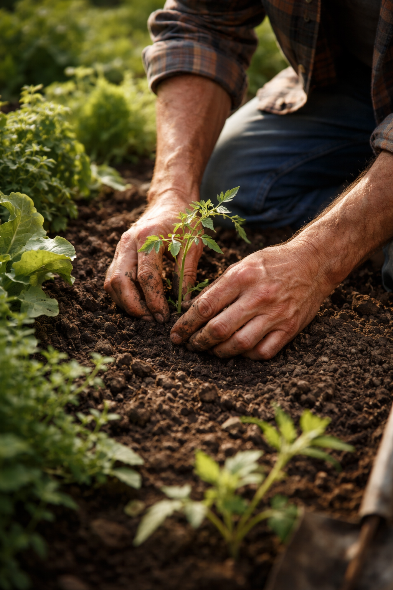

Συνέπεια
Ερχόμαστε οργανωμένα, δουλεύουμε με σταθερότητα και κρατάμε καθαρή εικόνα στο πλάνο συνεργασίας.
Σχετικά με εμάς
Ως τοπική επιχείρηση στη Θεσσαλονίκη, δουλεύουμε με συνέπεια, φροντίδα και σεβασμό προς τον χώρο κάθε πελάτη, είτε πρόκειται για κατοικία είτε για μικρή επαγγελματική εγκατάσταση.

Η φιλοσοφία μας
Πιστεύουμε ότι ένας περιποιημένος εξωτερικός χώρος δεν χρειάζεται υπερβολές. Χρειάζεται συνέπεια, καθαρό μάτι, σωστές παρεμβάσεις και πραγματικό ενδιαφέρον για το πώς ζει και κινείται ο άνθρωπος μέσα στον χώρο του.
Να προσφέρουμε φροντίδα που συνδυάζει αισθητική, λειτουργικότητα και ηρεμία στην καθημερινότητα του πελάτη.
Να είμαστε σταθεροί στην επικοινωνία, καθαροί στη δουλειά και προσεκτικοί σε κάθε λεπτομέρεια.
Τι μας χαρακτηρίζει
Ερχόμαστε οργανωμένα, δουλεύουμε με σταθερότητα και κρατάμε καθαρή εικόνα στο πλάνο συνεργασίας.
Αντιμετωπίζουμε κάθε χώρο σαν ζωντανό μέρος της καθημερινότητας του πελάτη και όχι σαν απλή εργασία.
Θέλουμε το αποτέλεσμα να είναι όμορφο, αλλά και εύκολο στη διατήρηση στο πέρασμα του χρόνου.
Τοπική παρουσία
Η βάση μας βρίσκεται στα Πεύκα Θεσσαλονίκης και εξυπηρετούμε πελάτες που αναζητούν αξιόπιστη φροντίδα στον κήπο, στην αυλή, στην είσοδο ή στον εξωτερικό χώρο της επιχείρησής τους. Η τοπική παρουσία βοηθά να ανταποκρινόμαστε με μεγαλύτερη αμεσότητα και καλύτερη κατανόηση των συνθηκών κάθε εποχής.
Ας γνωριστούμε